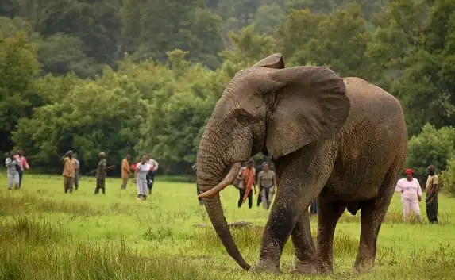
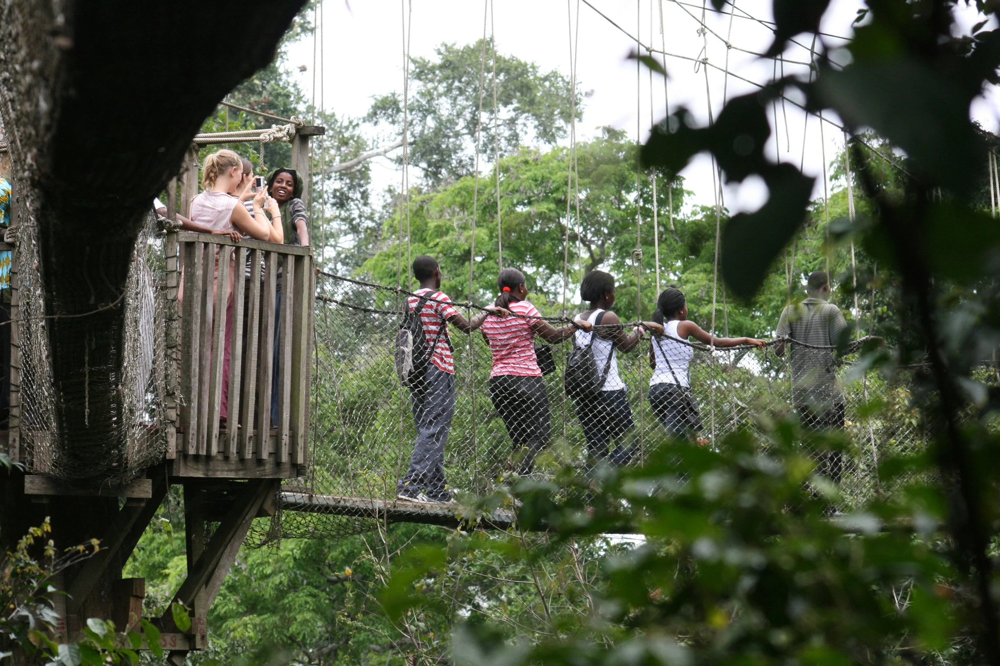

Experience Ghana's diverse wildlife and pristine natural habitats

Mole National Park is Ghana's largest national park and a premier safari destination. Spanning 4,914 square kilometers, it's home to diverse wildlife including elephants, antelopes, buffalo, and over 500 bird species.
Best Time to Visit: November to March (dry season - easier wildlife viewing)

Kakum National Park features Ghana's most famous canopy walkway - a 330-meter suspended bridge providing a thrilling perspective of the forest from above. The park protects pristine rainforest and diverse ecosystems.
Best Time to Visit: Year-round, but more rain from April-October
Mole Park Admission: ₵50 GHS + ₵80 GHS for vehicle
Kakum Park Admission: ₵50 GHS + ₵30 GHS for canopy walkway
Activities: Guided walks, game drives, bird watching, photography
Accommodation: Lodges and camping facilities available